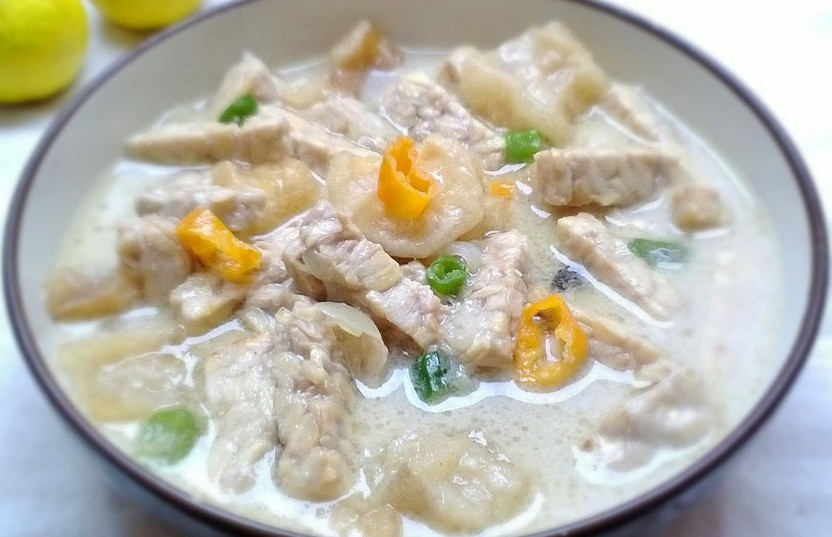

Jangan Tempe Pedes
Jika Anda mencari makanan yang menawarkan sensasi pedas di Pati, maka Jangan Tempe Pedas bisa menjadi pilihan. Jangan Tempe ini merupakan masakan kuah santan yang terbuat dari olahan tempe busuk atau semangit, yang telah dibumbui dengan sangat pedas.
Anda akan merasakan dominasi rasa ketumbar, cabe, serta merica pada hidangan satu ini. Meski begitu,makanan khas Pati satu ini begitu populer di sana terlebih di kawasan Desa Bongsari dan Jontro.